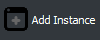

JohanTweaks
El mod que extiende el juego técnico vanilla a una nueva fase.


MultiMC es un launcher alternativo usado frecuentemente por los jugadores de la comunidad técnica.
Permite mantener cada carpeta .minecraft aislada del resto, evitando conflictos entre las opciones, controles y otros ajustes entre versiones.
Ambos launchers necesitan que uses una cuenta de minecraft. Si aún no tienes, puedes conseguir una aquí.
Dirígete a multimc.org y descarga la última release para tu sistema operativo.
Existe una versión en desarrollo, pero por está misma razón puede no ser estable.
Descomprime el archivo que has descargado y ejecuta MultiMC.
Sigue los pasos para instalar todo a tu gusto. Si quieres usar más de 4GB necesitarás Java x64.
Haz click en  arriba a la izquierda para crear una nueva instancia.
Selecciona la versión 1.16.1 y pulsa Aceptar.
Haz click en Editar Instancia en la lista de opciones de la instancia.
Haz click en Instalar Fabric y selecciona la versión recomendada.
Haz click en Carpeta de Minecraft en la lista de opciones de la instancia y abre la carpeta mods.
Si no existe la carpeta mods, crea una nueva.
Dirígete a minecraft.net y descarga el launcher oficial para tu sistema operativo.
Usando el Minecraft Launcher, crea un nuevo perfil en la versión 1.16.1.
Es muy importante que antes de continuar abras el juego con este perfil y luego lo cierres.
Descarga Fabric desde su web de descargas.
Instala Fabric para la 1.16.1 con la última loader version.
Abre tu carpeta .minecraft y entra en la carpeta de mods.
Si no existe la carpeta mods, crea una nueva.
Haz click en el botón Descargar JohanTweaks y guardalo en la carpeta de mods.
Te siguen al llevar en la mano esmeralda, bloque de esmeralda o ore de esmeralda.
Tratan de escapar de los aldeanos.
Usalos sin ningún tipo de "tiempo de espera" o cooldown.
Diferentes crafteos que te permiten descomprimir bloques.

Crafteos variados para diferentes objetos.
Recetas de horno para agilizar el trabajo.
Todos los polvos de concreto generan el cristal tintado de su mismo color.